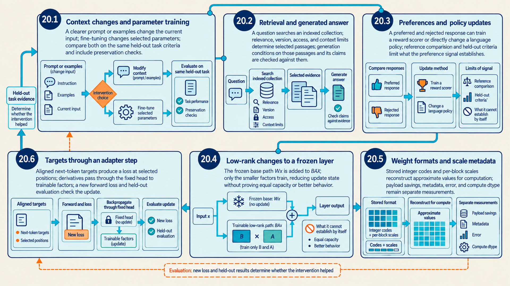
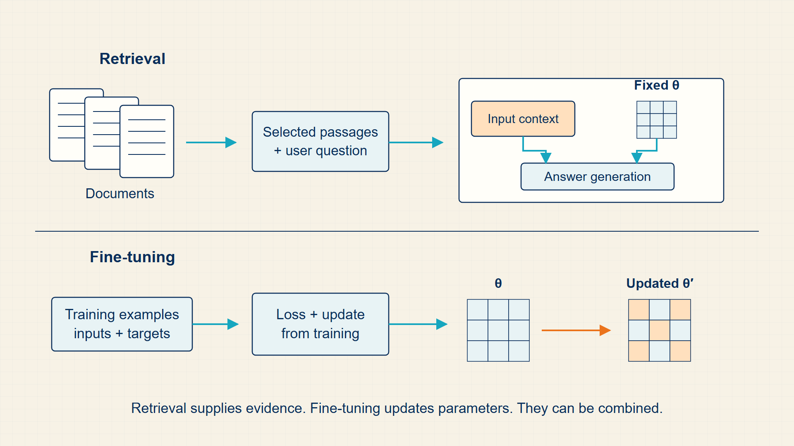
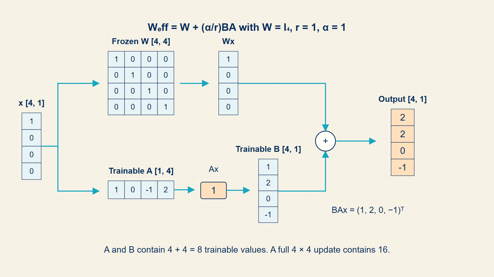
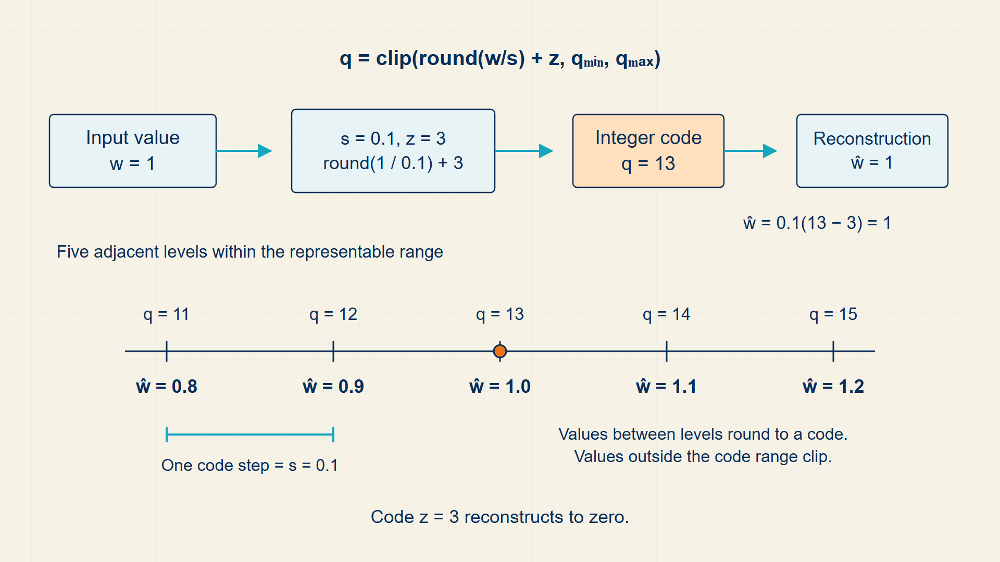

20 Model adaptation: Context, preferences, and trainable weights
A pretrained model may lack the information needed for an answer or fail to follow a required output format. These failures call for different changes. A prompt or retrieved passage changes the current input. Full fine-tuning changes base parameters, while a smaller trainable addition can change the effective computation with less update state.
The choice depends on held-out task results, available training examples, and resource costs. A different parameter count or storage format alone establishes no improvement in behavior.

20.1 Context changes and parameter training
A model that returns the wrong answer format may respond to a clearer instruction or examples in its prompt. If the failure persists on representative held-out inputs, training examples can provide a signal for changing the model itself. The comparison needs the same task criteria and evaluation set.
In-context learning supplies task examples inside the prompt while keeping model parameters fixed.1 For an instruction such as Summarize this record in one sentence, a demonstration can show the expected length and structure. The examples consume context positions and must be supplied again when their information is needed. §18.3 develops fixed-parameter task prompting.
Fine-tuning continues training from a pretrained checkpoint on selected data. Supervised fine-tuning, abbreviated SFT, uses input-output examples of the desired behavior. Instruction tuning is supervised fitting on instructions and corresponding responses, sometimes with additional context. Fine-tuning can also continue a self-supervised objective on domain text without instruction-answer annotations.
Full fine-tuning makes all base-model parameters eligible for updates. PEFT, parameter-efficient fine-tuning, instead fits selected parameters or smaller added components. Both use a loss and gradients. Their trainable tensors and stored update state differ.
Fine-tuning changes the selected parameters using a task loss. The gradient step in §5.4 evaluates that loss at the current parameters before applying the change, using learning rate \(\eta>0\). Full tuning selects the base parameters. An added adapter is a trainable transformation inserted into the computation. Adapter training selects its parameters while holding the base fixed. An update establishes a parameter change. A new loss calculation and held-out evaluation determine its effect. Chapter 10 develops other update rules.
The same format-following need gives a concrete comparison:
| Method | What changes | Cost and evidence |
|---|---|---|
| Written prompt or demonstrations | Context for each request, with fixed parameters | Extra input tokens. Test format success on held-out prompts. |
| Full fine-tuning | All eligible base-model parameters | Base gradients and optimizer state. Check task improvement and retained behavior. |
| Parameter-efficient tuning | Selected parameters or smaller added components | Less trainable state, with constrained changes. Measure the same task and retention criteria. |
The table compares interventions, not measured winners. A short demonstration is useful when context alone produces the required behavior. Training becomes a candidate when repeated failures justify its data preparation and update costs. Missing or changing factual information raises the separate retrieval choice in §20.2.
PEFT includes several parameter choices. Selected-parameter tuning can update only existing biases or chosen layers. Adapter training instead fits an added transformation. Learned prompt vectors are numerical input additions optimized by gradients, unlike ordinary written in-context examples. LoRA, developed in §20.4, factors a trainable matrix change into two smaller matrices. These alternatives differ in insertion points, trainable state, inference work, and available capacity.2
For a causal instruction example, the model receives the formatted instruction, optional context, and recorded response. A response-only objective ignores prompt targets while retaining the prompt as visible context. Another objective can supervise all recorded continuations. The alignment and loss-mask rules determine which logits meet which targets, independently of which parameters are trainable.
Training examples can pair a problem with written solution steps and a final answer. Supervised fine-tuning on those sequences can encourage a model to produce the same response structure. Check the emitted steps against the problem and final answer. They do not reveal every operation inside the model.
Catastrophic forgetting is loss of previously useful behavior during further fitting. Narrow data or unsuitable updates can improve the target task while worsening others. Mixing tasks, selecting fewer updates, or changing the learning rate are possible controls to compare. None guarantees preservation, and freezing the base does not ensure that an active adapter preserves its outputs.
Validation should measure the requested behavior and any general capabilities that must remain useful. Training and validation prompts must stay separate. A learning rate below a pretraining rate is a possible starting choice, not a universal requirement. The checkpoint, tokenizer revision, data, trainable parameter list, and budget identify what was tested. §24.4 gives a fuller comparison protocol.
Context and parameter changes can also be combined. Before fitting changing facts into weights, a retrieval system can supply the relevant records as input.
20.2 Retrieval, selected evidence, and the generated answer
A model cannot use an updated record that is absent from both its learned behavior and its current input. RAG, retrieval-augmented generation, finds relevant external material and includes selected passages in the generation context. The generator can then condition on those passages while its parameters remain fixed.3
The retrieval component receives the question and searches an indexed collection. Keyword retrieval compares terms, while vector retrieval compares query and passage representations using a similarity measure such as cosine. The collection stores passage text and identifying information alongside the index. A retriever may itself have trained parameters. Fixed generator weights do not imply an untrained retriever.
Retrieval returns candidates with scores. A selection step checks relevance, record version, access, and fit within the context budget. An optional reranker scores question-passage pairs more closely. The application assembles the selected text with the question and task instruction. The generator then produces an answer, whose claims can be checked against the supplied records.
For response sequence \(y\), the conditional distribution is
\[ P_{\theta}(y\mid\mathrm{prompt},\mathrm{retrieved\,context}) \tag{20.1}\]
Here \(\theta\) denotes fixed generator parameters. The prompt contains the original request, and the retrieved context contains the selected evidence. This expression describes generation after retrieval. It does not specify an index, ranking algorithm, or guarantee that the selected passages answer the question.

The two illustrated branches distinguish added context from parameter changes. They can be combined: a tuned generator can read retrieved evidence. The image does not show the candidate-selection steps described above.
Example: A retrieved record and a version mismatch
The question is How many Batch A samples passed in the current run? The supplied collection contains three short records. These records and scores are chosen for this example.
| Record | Passage | Score |
|---|---|---|
| R1 | Last month. Batch A: 12 samples, 2 failed. | 0.92 |
| R2 | Current run. Batch A: 12 samples, 3 failed. | 0.88 |
| R3 | Current run. Batch B: 10 samples, 1 failed. | 0.70 |
Retrieval returns R1 before R2. Selecting only the highest score supplies last month’s record, from which the answer would be 10. That calculation is faithful to R1 but wrong for the requested current run.
A version-aware selection chooses R2 instead. The assembled context says Current run. Batch A: 12 samples, 3 failed. The requested output is a one-sentence answer with its record ID. A supported answer is Nine samples passed [R2]., since \(12-3=9\).
The reference for evaluation is the current record and its count, not the retrieval score. R3 discusses the wrong batch, despite its semantic similarity. Even with R2 present, a generated answer of 10 would still require correction.
Conclusion: Ranking supplies candidates, while selection determines which evidence reaches generation. The failed version choice shows why a high similarity score cannot certify an answer.
In a separate supplied probability comparison, adding relevant context raises a particular answer sequence’s probability from 0.2 to 0.6. The generator weights remain unchanged. This illustrates changed conditioning, not a measured retrieval improvement or a guarantee that a correct answer becomes more likely.
Retrieval can fail through missing records, unsuitable segmentation, poor ranking, stale versions, or truncation of necessary context. The generator can also ignore or misread useful evidence. In either case it may produce a hallucination: an unsupported or contradictory claim presented as established fact. Retrieved text should remain evidence to assess, rather than acquiring the authority of application instructions. Access controls and instruction handling belong to the application, not the similarity score.
Index storage, retrieval latency, extra prompt tokens, and citation checking add costs. Parameter training adds a different cost and may become outdated as records change. A useful comparison measures answer quality and resource use under the same questions. Preferences between otherwise plausible answers provide another learning signal.
20.3 Preference comparisons, reward fitting, and policy updates
Two answers to the same question can differ in usefulness even when both satisfy a basic format check. A preference record keeps the prompt, both responses, the preferred response, and the judgment criterion together. These comparisons can supervise a scorer or directly guide the response model.
Alignment denotes training and evaluation intended to guide behavior toward specified instructions, preferences, or constraints. The criteria and judging population matter. Preference agreement, factual accuracy, and source faithfulness remain different measurements.
A language policy is the model’s conditional distribution over output actions, here tokens forming a response. Write \(\pi_\theta(y\mid x)\) for its probability of response \(y\) to prompt \(x\). Using the sequence factorization from §1.2, its log probability sums the conditional token log probabilities, including the declared stopping convention.
A reward model is a learned scorer \(r_\phi(x,y)\) of a prompt-response pair. Its parameters \(\phi\) differ from the language policy’s \(\theta\). A Bradley-Terry comparison uses the difference between two scores: it predicts preference for response \(y_w\) over \(y_l\) with \(\sigma(r_\phi(x,y_w)-r_\phi(x,y_l))\). Negative log loss on the observed preference trains the scorer. This stage updates \(\phi\), not the language policy.45
For example, supplied scores 1.2 and 0.2 give a difference of 1. Their sigmoid is approximately 0.731059, with pair loss approximately 0.313262. Raising the preferred-minus-rejected gap lowers that loss. The calculation scores agreement with this comparison, not whether either response is true.
RLHF, reinforcement learning from human feedback, uses human judgments to train or supply a reward signal for policy learning. In the reward-model arrangement, the current language policy generates responses. A fitted scorer evaluates them, and policy gradients change the response distribution. A reference policy stays fixed to provide a comparison distribution.6
A KL penalty subtracts a multiple of the divergence from that reference. For prompt distribution \(\mathcal D\), the idealized reward objective is
\[ \max_{\theta}\;\mathbb{E}_{x\sim\mathcal{D}}\!\left[\mathbb{E}_{y\sim\pi_\theta(\cdot\mid x)}r_\phi(x,y)-\beta\operatorname{KL}\!\left(\pi_\theta(\cdot\mid x)\mathbin\Vert\pi_{\mathrm{ref}}(\cdot\mid x)\right)\right] \tag{20.2}\]
The outer expectation averages prompts \(x\sim\mathcal D\). Within each prompt, \(y\sim\pi_\theta(\cdot\mid x)\) supplies the response average. The reward parameters \(\phi\) and reference policy remain fixed during this policy update. The coefficient \(\beta>0\) controls the penalty, with KL as defined in §8.2. Reference probabilities must support the responses used by the trained policy.
A sampled response supplies recorded token choices and a reward. Policy learning differentiates the log probabilities assigned to those choices, rather than differentiating through the discrete sampling decision. Weighting that gradient by reward relative to a baseline favors choices with better-than-expected outcomes. The baseline predicts expected reward from the available context.
For a finite set of possible responses with fixed rewards, expected reward is \(J(\theta)=\sum_y\pi_\theta(y)r(y)\). Differentiating the probabilities gives \(\nabla J=\sum_y r(y)\nabla\pi_\theta(y)\). Where probabilities are positive, \(\nabla\pi_\theta(y)=\pi_\theta(y)\nabla\log\pi_\theta(y)\). Substitution writes the same derivative as an average of reward-weighted log-probability gradients under the policy.
For two choices, let the first have probability \(p=\sigma(\theta)\) and reward 2, and the second probability \(1-p\) and reward 0. Then \(J=2p\) and \(dJ/d\theta=2p(1-p)\). At \(p=0.5\), the first choice’s log-probability derivative is \(1-p=0.5\). Its reward-weighted value is 1, but it occurs only half the time. The other choice contributes zero, so their expected contribution is 0.5, matching the direct derivative.
Subtracting a baseline \(b\) that does not depend on the chosen action leaves this expectation unchanged: its contribution is \(b\sum_y\nabla\pi_\theta(y)=b\nabla1=0\). The baseline is held fixed in this policy-gradient calculation, even when a separate predictor is fitted to estimate its value. These conditions explain how a sampled action supplies a gradient estimate without differentiating the act of sampling. This reward-weighted log-probability estimator is the basis of REINFORCE. PPO adds a different clipped objective rather than being identical to that earlier method.7 An advantage estimate measures the observed outcome relative to that expectation.
PPO, Proximal Policy Optimization, is one policy-update method used in this arrangement. A rollout here is a response sampled under a saved policy version. PPO compares the updated probability of each recorded action with its probability under that saved version.8
Write their ratio as \(\rho\) and the estimated advantage as \(a\). A common clipped objective uses \(\min(\rho a,\operatorname{clip}(\rho,1-\epsilon,1+\epsilon)a)\) for \(0<\epsilon<1\). Here clipping restricts the ratio used in one branch of this training objective. Positive advantages stop rewarding increases beyond the upper ratio, while negative advantages stop rewarding decreases beyond the lower ratio. This differs from directly constraining every policy probability. Repeated sampled responses and refreshed advantage estimates support later updates. Clipping and a KL penalty do not guarantee a hard bound on every distribution change.
For \(\epsilon=0.2\), advantage \(a=1\), and ratio \(\rho=1.4\), the objective contribution is \(\min(1.4,1.2)=1.2\). For a separate negative advantage \(a=-1\) and ratio \(\rho=0.6\), it is \(\min(-0.6,-0.8)=-0.8\). These calculations show the capped incentive on either side. They do not clip the model’s actual probability ratio to that interval.
For a supplied expected reward of 2.0, KL of 0.5, and \(\beta=0.2\), the objective is \(2.0-0.2(0.5)=1.9\). This value combines reward and reference deviation under those assumptions. A larger score need not mean greater truthfulness if the reward model favors the wrong property.
RLAIF, reinforcement learning from AI feedback, uses AI-generated judgments for some feedback records. Their origin changes the judging process, not the need to test its errors and criteria. Human and automated judgments can both be inconsistent or poorly matched to deployment needs.
DPO, Direct Preference Optimization, instead fits the language policy directly on preferred-rejected pairs against a fixed reference. Its one-pair loss is9
\[ -\log\sigma\!\left(\beta\left((\log\pi_{\theta}(y_w\mid x)-\log\pi_{\mathrm{ref}}(y_w\mid x))-(\log\pi_{\theta}(y_l\mid x)-\log\pi_{\mathrm{ref}}(y_l\mid x))\right)\right) \tag{20.3}\]
For the same prompt \(x\), \(y_w\) denotes the preferred response and \(y_l\) the rejected response. Each parenthesized difference is a log probability ratio between the trainable and reference policies. Their difference measures how much the policy favors the preferred response over the rejected response relative to the reference. The positive \(\beta\) scales that comparison before sigmoid and negative logarithm.
DPO differentiates these sequence log probabilities with respect to \(\theta\). It needs no separately fitted reward model or online rollout loop for this pair loss. A fixed reference alone does not certify preserved behavior on other prompts.
Example: Completing the DPO pair loss
Let the preferred response’s reference-relative log probability be 1.5 and the rejected response’s 0.5, with \(\beta=0.5\). The sigmoid input is \(0.5(1.5-0.5)=0.5\).
Sigmoid gives approximately 0.622459. The one-pair loss is \(-\log\sigma(0.5)\approx0.474077\), or 0.474 nats. An unchanged policy equal to its reference gives input zero and loss \(\log2\approx0.693147\) on the same pair.
Conclusion: The positive relative gap gives this preferred pair a lower loss than the zero-gap baseline. It establishes the direction rewarded by this objective, not universal human agreement or factual correctness.
Preference data can omit important cases or reward polished but incorrect answers. Held-out comparisons and independent task checks remain necessary. The objective specifies what to improve. A parameterization such as LoRA specifies which changes can realize that improvement.
20.4 Low-rank changes to a frozen layer
Updating every entry of a large matrix also requires its gradients and often optimizer-state arrays. Fitting a smaller parameter set can reduce that trainable storage while retaining the original matrix for forward computation.
LoRA, Low-Rank Adaptation, freezes a base matrix and trains two factors whose product supplies an additive change.10 A frozen base weight is retained for computation but excluded from parameter updates. For input column \(x\in\mathbb R^{D_{\mathrm{in}}}\), let \(W\) have shape \([D_{\mathrm{out}},D_{\mathrm{in}}]\).
The factors have shapes \(A\in\mathbb R^{r\times D_{\mathrm{in}}}\) and \(B\in\mathbb R^{D_{\mathrm{out}}\times r}\). Their positive inner dimension \(r\) is the LoRA rank. It bounds the rank of the update \(BA\) but does not require that update to attain rank \(r\). The chosen numerator \(\alpha_{\mathrm{LoRA}}\) sets the adapter scale \(\alpha_{\mathrm{LoRA}}/r\). Implementations commonly store this numerator in the code field lora_alpha. The effective weight is
\[ W_{\mathrm{eff}}=W+\frac{\alpha_{\mathrm{LoRA}}}{r}BA \tag{20.4}\]
The product \(BA\) has the same shape as \(W\). Its rank satisfies \(\operatorname{rank}(BA)\le r\), because every output lies in the span of \(B\)’s \(r\) columns. Dependent or zero columns can make the rank smaller. This constrains the update, not the rank of the frozen base. §14.3 introduced rank as the number of independent matrix directions.
Forward execution can calculate \(Wx+(\alpha_{\mathrm{LoRA}}/r)B(Ax)\) without constructing a dense update matrix. It still computes the frozen base path. The two factors contain
\[ \operatorname{params}_{\mathrm{LoRA}}=r(D_{\mathrm{in}}+D_{\mathrm{out}}) \tag{20.5}\]
trainable values, from \(rD_{\mathrm{in}}\) in \(A\) and \(D_{\mathrm{out}}r\) in \(B\). A full matrix update has \(D_{\mathrm{in}}D_{\mathrm{out}}\) values. The ratio is \(r(D_{\mathrm{in}}+D_{\mathrm{out}})/(D_{\mathrm{in}}D_{\mathrm{out}})\). Biases, other adapted layers, and activation storage are excluded from this count.

The picture places two factor boxes beside a frozen weight. The dimensions and multiplication order above specify the compatible product, which the boxes alone do not establish.
Example: Four-by-four shape, count, and output change
Use \(W\) of shape \([4,4]\), \(r=1\), and \(\alpha_{\mathrm{LoRA}}=r\), giving scale one. Factor \(A\) has shape \([1,4]\) and four trainable entries. Factor \(B\) has shape \([4,1]\) and four entries. Their product is \([4,4]\), so eight trainable values replace a 16-value dense update.
For a numerical instance, set \(W=I_4\), \(A=(1,-1,2,0.5)\), \(B=(0.1,0,0.2,-0.1)^{\mathsf T}\), and \(x=(1,2,3,4)^{\mathsf T}\). Then \(Ax=1-2+6+2=7\).
The adapter output is \(B(7)=(0.7,0,1.4,-0.7)^{\mathsf T}\). Adding the base output \(Wx=x\) gives \((1.7,2,4.4,3.3)^{\mathsf T}\).
Conclusion: Both paths return four coordinates and add at the output. The base remains a four-by-four computation. The eight trainable factor entries determine only its additive change.
In a separate large layer, \(D_{\mathrm{in}}=D_{\mathrm{out}}=4096\) and \(r=8\). Each factor has 32,768 values, giving 65,536 against 16,777,216 for a dense matrix. The ratio is \(1/256=0.390625\%\). A matrix with merely 100 entries does not determine the factor count: a 10-by-10 rank-one choice uses 20 values, while 5-by-20 uses 25.
Initialization matters because both factors enter the same product. The original LoRA construction initializes \(A\) randomly and \(B\) at zero. This starts with zero adapter output, preserving the base function at initialization.11
Let \(g\) be the loss gradient with respect to this layer’s output and \(s=\alpha_{\mathrm{LoRA}}/r\). The derivative chain rule gives \(\nabla_B L=s\,g(Ax)^{\mathsf T}\) and \(\nabla_A L=s\,B^{\mathsf T}gx^{\mathsf T}\). If \(B=0\), the first gradient for \(A\) is zero, while \(B\) can receive a nonzero gradient through \(Ax\).
For \(A\) and \(x\) above, \(Ax=7\). With zero \(B\), unit scale, and supplied \(g=(1,1,1,1)^{\mathsf T}\), every entry of \(\nabla_B L\) is 7. If both factors were zero, both gradients would be zero. Under this product’s ordinary gradient updates, neither factor could start changing. Nonzero \(A\) permits learning to begin, though a particular input or upstream gradient can still yield zero.
A trained LoRA adapter can be merged for compatible inference by storing the effective weight \(W_{\mathrm{eff}}\) defined above as one matrix.
The merged matrix has the same dimensions as \(W\) and absorbs the scale and product. This removes the separate branch, but switching adapters then requires another merge or another stored weight version. Quantized weights, chosen dtypes, and rounding can restrict or alter a merge. peft exposes compatible merges through merge_and_unload().12
QLoRA, Quantized Low-Rank Adaptation, additionally stores the frozen base in a quantized form while fitting higher-precision adapters. Quantization approximates stored values with compact codes. Its reconstruction mechanism is developed in §20.5. A forward sketch is
\[ y=\operatorname{dequant}(W_{4\mathrm{bit}})x+\frac{\alpha_{\mathrm{LoRA}}}{r}BAx \tag{20.6}\]
Here \(W_{4\mathrm{bit}}\) stores the frozen base, and \(\operatorname{dequant}\) reconstructs values for computation. The input and output widths match the unquantized layer. Gradients can pass through the fixed base transformation to earlier trainable components without updating its stored weights.
The following abbreviated setup follows the peft 0.17.0 quantization guide. transformers supplies model loading, bitsandbytes supplies quantized linear operations, and PyTorch supplies tensor operations. prepare_model_for_kbit_training prepares the loaded quantized model before adapters are attached.13
The fragment requires an actual checkpoint replacing model-name, a compatible tokenizer, and a compatible bitsandbytes installation and supported hardware. Its q_proj and v_proj targets fit some causal-model architectures, not every model. task_type="CAUSAL_LM" likewise does not configure an encoder-decoder model. A real experiment must pin compatible package and checkpoint revisions.
Code example: QLoRA configuration and trainable-parameter inspection
import torch
from transformers import AutoModelForCausalLM, BitsAndBytesConfig
from peft import LoraConfig, get_peft_model, prepare_model_for_kbit_training
quantization = BitsAndBytesConfig(
load_in_4bit=True,
bnb_4bit_quant_type="nf4",
bnb_4bit_compute_dtype=torch.bfloat16,
bnb_4bit_use_double_quant=True,
)
base = AutoModelForCausalLM.from_pretrained(
"model-name",
quantization_config=quantization,
)
base = prepare_model_for_kbit_training(base)
lora_config = LoraConfig(
task_type="CAUSAL_LM",
bias="none",
r=8,
lora_alpha=16,
target_modules=["q_proj", "v_proj"],
)
model = get_peft_model(base, lora_config)
model.print_trainable_parameters()
trainable = [p for p in model.parameters() if p.requires_grad]
assert trainable, "No trainable adapter parameters"Here r=8 and lora_alpha=16 mean \(r=8\) and \(\alpha_{\mathrm{LoRA}}=16\), giving adapter scale 2. The NF4 and double-quantization fields select base storage, while torch.bfloat16 selects its compute format. The fragment prints trainable parameter counts and collects the trainable tensors. It contains no dataset, optimizer, backward call, or training result.
The optimizer cycle in §11.5 still applies to the collected adapter tensors. As §11.2 explains, requires_grad=True alone does not add them to an optimizer. transformers.Trainer can coordinate a full supervised loop, but it is not called here. Fewer trainable values chiefly reduce gradient and update-state storage. Frozen weights and needed activations still consume memory, and actual speed requires measurement.
20.5 Weight formats, reconstruction, and scale metadata
A frozen base still occupies memory even when its gradient and optimizer state are absent. Storing fewer bits per weight can reduce that payload, but reconstruction introduces approximation and metadata costs.
One byte contains eight bits. A 5-by-5 matrix of float32 values uses \(25(4)=100\) bytes of raw value payload. Storage precision is the numerical format retained in memory. Compute dtype is the numerical type used by an operation. They need not be the same.
Floating-point formats divide bits among a sign, an exponent, and a fraction. The exponent largely determines range. The fraction determines spacing between nearby representable values. float32 uses 1, 8, and 23 bits respectively. float16 uses 1, 5, and 10, while bfloat16 uses 1, 8, and 7.14
Thus the two 16-bit formats each use two bytes per element but have different range and precision. bfloat16 keeps a range comparable to float32, with coarser spacing. Rounding and overflow are separate numerical risks. An eight-bit integer code uses one byte, but needs a reconstruction convention to represent a real-valued weight.
For one weight \(x\), an affine quantizer chooses a positive scale \(s\) and integer zero point \(z\). It rounds \(x/s+z\) to a supported integer code \(q\), clipping values outside the available code range. Reconstruction uses the same \(s\), \(z\), and \(q\):
\[ \hat{x}=s(q-z) \tag{20.7}\]
The reconstructed \(\hat x\) approximates the original value. Rounding loses distinctions within a quantization interval, and clipping adds error beyond its range. This affine example prepares the arithmetic. It is not the NF4 codebook rule used by the fragment.

The illustration shows codes from 0 through 11 but supplies no scale, zero point, bit width, or reconstruction example. The equations provide those required choices rather than inferring them from the drawing.
Block quantization assigns scale information to small groups of weights. A large outlier then controls only its group’s range instead of the whole matrix. Smaller groups can fit local ranges more closely, but need more metadata. Let \(w_{b,i}\) be entry \(i\) in block \(b\), \(s_b>0\) its block scale, \(z_b\) its zero point, and \(q_{b,i}\) its stored integer code. The affine reconstruction is
\[ \hat{w}_{b,i}=s_b(q_{b,i}-z_b) \tag{20.8}\]
Treat each row of the five-by-five matrix as one block. Let \(a_b=\max_i|w_{b,i}|\) be the largest absolute weight in block \(b\):
| Block | Value 1 | Value 2 | Value 3 | Value 4 | Value 5 |
|---|---|---|---|---|---|
| 1 | -0.7 | -0.3 | 0 | -0.4 | 0.3 |
| 2 | -1 | 0.2 | 0.7 | 1.7 | -0.9 |
| 3 | -0.1 | -1.5 | -0.1 | 0.8 | 0.5 |
| 4 | 1.2 | -1.7 | -0.9 | -0.3 | 0.7 |
| 5 | 0.4 | 0.1 | -1.4 | 2.2 | -1.1 |
The row maxima in absolute value are \((0.7,1.7,1.5,1.7,2.2)\). With \(Q=127\), the corresponding encoding multipliers \(c_b=127/a_b\) are approximately \((181.429,74.706,84.667,74.706,57.727)\). Their reciprocals are reconstruction scales \(s_b\). Applying one multiplier to all rows would change the codes, because each row uses a different range. For code 13, scale 0.1, and zero point 3, reconstruction gives \(0.1(13-3)=1.0\).
A symmetric absmax quantizer fixes the zero point at zero and uses codes from \(-Q\) through \(Q\). For a nonzero block, let \(a=\max_i|w_i|\) and choose reconstruction scale \(s=a/Q\). Encoding rounds \(w_i/s\), and reconstruction multiplies the code by \(s\). Equivalently, use the reciprocal multiplier \(c=Q/a\), giving \(q_i=\operatorname{round}(cw_i)\) and \(\hat w_i=q_i/c\).
For values \((1.5,2.3,3.7,4.1,5.6,6.8,7.9,8.4,9.2,10.2)\) and \(Q=127\), the multiplier is \(127/10.2\approx12.45098\). Nearest rounding gives codes \((19,29,46,51,70,85,98,105,115,127)\). For the first value, reconstruction gives \(19(10.2/127)\approx1.525984\), an error of about \(0.025984\). Decoding the rounded codes uses the stated scale or multiplier to approximate the original weights.
To trace a rounding boundary as well, choose signed codes from \(-7\) through 7, zero point 0, and rounding to the nearest integer with ties to the even integer. This hand calculation uses exact decimal values. For the block \((-1.4,-0.3,0.6,1.1)\), the largest absolute weight is 1.4. Setting \(s=1.4/7=0.2\) gives unrounded codes \((-7,-1.5,3,5.5)\). Rounding and clipping give \((-7,-2,3,6)\).
Reconstruction gives \((-1.4,-0.4,0.6,1.2)\). The reconstructed-minus-original errors are \((0,-0.1,0,0.1)\). For an all-zero block, choose scale 1 and all codes zero so the scale remains positive. An implementation must also account for the representation of its inputs: binary floating-point approximations can move an intended half-integer slightly to either side of a tie. NF4 uses a different, nonuniform set of reconstruction levels.
NormalFloat 4 (NF4) instead uses four-bit codes to select 16 nonuniform reconstruction levels. The levels are designed around a normalized normal distribution, with more levels near zero. For codebook \(C\) and block scale \(s_b\), reconstruction has the form \(\hat w_{b,i}=s_b C[q_{b,i}]\). It uses lookup rather than equally spaced integer subtraction.15
The code identifies a level, not a four-bit floating-point multiplier. For example, code 13 does not mean \(13s_b\) or \(s_b(13-3)\) in NF4. Its result requires the actual codebook entry. Distribution mismatch and outliers can still increase quantization error.
Double quantization additionally compresses the collection of block-scale constants. Reconstruction first recovers those constants, then uses them to recover weight values. Let \(q_b^s\) be the code for block scale \(b\), \(s_s\) its second-level scale, and \(z_s\) its second-level zero point. The affine reconstruction is
\[ \hat{s}_b=s_s(q_b^{s}-z_s) \tag{20.9}\]
This illustrates nested metadata reconstruction, not the exact NF4 implementation’s scale format. A system can compress reconstruction scales directly or compress their reciprocal encoding multipliers \(c_b=1/s_b\). The stored metadata must identify the convention.
For reciprocal multipliers, set \(c_2=127/\max_b c_b\), store \(r_b=\operatorname{round}(c_2c_b)\), and recover \(\hat c_b=r_b/c_2\). Reconstruction then divides the weight code by \(\hat c_b\), so \(\hat c_b\) must remain positive. For \(c_b=(1,1000)\), \(c_2=0.127\) gives codes \((0,127)\). The recovered first multiplier is zero, making that division undefined. Retaining the small multiplier at higher precision preserves it. Clamping its code to one instead changes the scale and requires a separate error check.
Example: A scale approximation changes the weight
The earlier code 13 with zero point 3 and scale 0.1 reconstructed to 1.0. In a separate second-level example, scale code \(q_b^s=8\), scale \(s_s=0.01\), and zero point \(z_s=0\) reconstruct \(\hat s_b=0.08\).
Using that approximate scale for the same weight code gives \(0.08(13-3)=0.8\). It differs from 1.0 by \(-0.2\). The scale approximation therefore changes every weight reconstructed using that scale.
Conclusion: Two quantization levels introduce two reconstruction steps. Recovering a scale of 0.08 cannot be treated as recovering the earlier 0.1 exactly.
For the 25-weight matrix, eight-bit weight codes use 25 bytes before metadata. Choose five blocks of five weights for a separate storage exercise. Five float32 scales add 20 bytes, giving 45. Assume symmetric coding with zero points fixed at zero and no stored zero-point array.
If each block scale is replaced by an eight-bit code, those five codes use five bytes. One float32 second-level scale adds four bytes. Under this chosen grouping, the payload becomes \(25+5+4=34\) bytes, excluding alignment and other metadata. A different group size or stored offset changes the total. The original 100-byte matrix size alone cannot determine a universal compressed total.
Four-bit weight codes nominally use half a byte each. Packing 25 of them needs at least 13 whole bytes before scales, codebooks, padding, and other metadata. This raw payload comparison does not give total training memory. Higher-precision adapters, activations, gradients, and optimizer state remain separate allocations.
QLoRA reconstructs frozen values into a supported compute format for matrix multiplication and adds the adapter path. An implementation may reconstruct blocks inside a kernel rather than allocate a full dequantized matrix. The paper’s paged optimizer manages training-state transfers, a separate mechanism from Chapter 21’s paged inference cache.16
Storage reduction and prediction quality need separate measurements. The loss and adapter gradients still depend on the values used in the forward calculation, including quantization error.
20.6 Aligned targets through an adapter-training step
An adaptation batch must connect its selected target positions to the parameters allowed to change. The following small calculation fixes that connection without claiming a completed training run.
Use the recorded tokens The cat sat on, with IDs \([1,2,3,4]\). Choose three input positions \([1,2,3]\) and their following labels \([2,3,4]\). The fourth recorded token supplies the extra target. The toy vocabulary has \(V=5000\) entries and model width \(D=64\).
For \(B=1\) and \(T=3\), the input and manually aligned labels both have shape \([1,3]\). Hidden representations have shape \([1,3,64]\). A vocabulary matrix stored as \([5000,64]\) maps them to logits \([1,3,5000]\). The loss includes the three target positions in this example.
The four recorded tokens supply three next-token comparisons. Their mean loss averages those three included target penalties, using §8.5’s loss calculation. Cross-entropy uses the target’s normalized log probability. Its normalization depends on the entire vocabulary-score row, not only the target logit. If a loss mask retains only \(N_{\mathrm{tgt}}>0\) targets, the sum and divisor instead use those \(N_{\mathrm{tgt}}\) positions.
Under §8.5’s model-internal shift, the full four-token input and copied labels form these same three comparisons. The new question here is which adapter parameters receive the resulting loss gradients.
To check the scale of the signal, suppose the three target positions initially have equal logits over 5,000 vocabulary entries. Each target probability is \(1/5000=0.0002\), giving mean loss \(\log5000\approx8.517193\) nats and perplexity 5000. Under a separate supplied condition with target probability 0.3 at each position, mean loss is \(-\log0.3\approx1.203973\) nats and perplexity about 3.333333. These values describe the predictions before an update. They do not identify which parameters the loss can change.
The three included token losses send gradients backward through the vocabulary head and any adapted layer that contributed to their logits. §20.4 gives that layer’s effective weight, factor shapes, and parameter count. Those formulas still apply here. The toy vocabulary head with \(D=64\) is separate from §20.4’s larger layer with \(D_{\mathrm{in}}=D_{\mathrm{out}}=4096\).
The optimizer receives \(A\) and \(B\), while the frozen base is excluded. With the initialization in §20.4, \(B\) can receive its first gradient through nonzero \(A\), even though the initial adapter output is zero. Backward computation accumulates gradients from the included target positions. An optimizer step then changes the factors. A new forward calculation is needed to measure the changed loss.
Example: The first adapter update
Reuse §20.4’s \(W=I_4\), \(A=(1,-1,2,0.5)\), \(x=(1,2,3,4)^{\mathsf T}\), rank \(r=1\), and scale one, but use the stated LoRA initialization \(B=0\). The initial adapter output is therefore zero, while \(Ax=7\).
Suppose the three included token losses have already been averaged and their backward paths supply this layer with the output gradient \(g=(1,1,1,1)^{\mathsf T}\). This supplied \(g\) isolates the adapter calculation. Obtaining it from vocabulary logits also requires the head weights and target probabilities.
The formulas from §20.4 give \(\nabla_B L=g(Ax)^{\mathsf T}=(7,7,7,7)^{\mathsf T}\) and \(\nabla_A L=B^{\mathsf T}g x^{\mathsf T}=0\). With SGD learning rate \(\eta=0.01\), the first step gives \(B'=B-\eta\nabla_B L=(-0.07,-0.07,-0.07,-0.07)^{\mathsf T}\), while \(A'=A\).
The changed adapter output on the same input is \(B'(A'x)=7\,B'=(-0.49,-0.49,-0.49,-0.49)^{\mathsf T}\). Adding the frozen base output \(Wx=x\) gives \((0.51,1.51,2.51,3.51)^{\mathsf T}\).
Conclusion: The zero-initialized \(B\) preserved the base output before training, then received a nonzero first gradient through \(A\). The step changed the adapter output while leaving \(W\) and \(A\) unchanged. A new vocabulary-head calculation would still be required to determine the new token probabilities and loss.
If the frozen base uses the quantized storage from §20.5, its values are reconstructed for the forward calculation. That changes the computed values, not which recorded tokens supply targets. To save the trained adapter, retain its configuration with the matching base checkpoint, tokenizer, and quantization settings needed to reconstruct the effective model.
Target alignment specifies the prediction events, and the parameter list specifies which tensors respond to their loss. Quantized storage changes the base values used in that computation, not the identity of the supervised tokens. Once parameters are fixed for generation, Chapter 21 follows the token and cache state that continues to change.
Chapter checkpoint
Does a rank-eight LoRA adapter guarantee an update of rank eight? Why initialize only one factor at zero? Does a retrieved high-scoring passage certify the answer?
Answer: The rank is at most eight and can be smaller. Zero \(B\) preserves the initial base output, while nonzero \(A\) permits a first gradient for \(B\). Setting both factors to zero blocks both initial gradients through their product. A retrieval score measures the ranking rule, so version, relevance, and the generated claims still need checking.
Why can four-bit base storage coexist with a higher-precision forward calculation, and what does the 0.474 DPO loss establish?
Answer: Stored codes are reconstructed for computation, with separate adapter and training state. The DPO value evaluates the supplied preferred-rejected pair against a fixed reference. It does not establish general factual accuracy or a completed training improvement.
Brown, T. B., et al. (2020). Language models are few-shot learners. Advances in Neural Information Processing Systems, 33. The paper evaluates task examples supplied in the prompt without gradient updates to the model.↩︎
Hugging Face. (2025). Soft prompts. PEFT 0.17.0 documentation. Learned numerical prompt vectors differ from written in-context examples.↩︎
Lewis, P., et al. (2020). Retrieval-augmented generation for knowledge-intensive NLP tasks. Advances in Neural Information Processing Systems, 33. The record-selection trace is an illustrative application, not reported paper output.↩︎
Bradley, R. A., & Terry, M. E. (1952). Rank analysis of incomplete block designs. I. The method of paired comparisons. Biometrika, 39(3–4), 324–345. The reward-score form used here is also given in Rafailov et al. (2023), §3.↩︎
Ouyang, L., et al. (2022). Training language models to follow instructions with human feedback. Advances in Neural Information Processing Systems, 35, 27730–27744, §3. The numerical reward-pair example is illustrative.↩︎
Ouyang, L., et al. (2022). Training language models to follow instructions with human feedback. Advances in Neural Information Processing Systems, 35, 27730–27744, §3. The numerical reward-pair example is illustrative.↩︎
Williams, R. J. (1992). Simple statistical gradient-following algorithms for connectionist reinforcement learning. Machine Learning, 8, 229–256. The finite-response calculation demonstrates the score-function gradient identity. It is not a paper experiment.↩︎
Schulman, J., Wolski, F., Dhariwal, P., Radford, A., & Klimov, O. (2017). Proximal policy optimization algorithms. arXiv:1707.06347, §3.↩︎
Rafailov, R., Sharma, A., Mitchell, E., Ermon, S., Manning, C. D., & Finn, C. (2023). Direct preference optimization: Your language model is secretly a reward model. Advances in Neural Information Processing Systems, 36, §4.↩︎
Hu, E. J., et al. (2022). LoRA: Low-rank adaptation of large language models. International Conference on Learning Representations, §4.1.↩︎
Hu, E. J., et al. (2022). LoRA: Low-rank adaptation of large language models. International Conference on Learning Representations, §4.1.↩︎
Hugging Face. (2025). PEFT checkpoint format. PEFT 0.17.0 documentation. Merge support depends on the model, adapter, and quantization configuration.↩︎
Hugging Face. (2025). Quantization. PEFT 0.17.0 documentation. Preparation precedes adapter attachment. The fragment is not a complete training experiment.↩︎
PyTorch Contributors. (2026). Tensor attributes and Type Info. PyTorch 2.12 documentation. Format sizes and numerical limits are distinct from allocation overhead.↩︎
Dettmers, T., Pagnoni, A., Holtzman, A., & Zettlemoyer, L. (2023). QLoRA: Efficient finetuning of quantized LLMs. Advances in Neural Information Processing Systems, 36, §3. Affine integer examples here are comparisons, not NF4 codebook calculations.↩︎
Dettmers, T., Pagnoni, A., Holtzman, A., & Zettlemoyer, L. (2023). QLoRA: Efficient finetuning of quantized LLMs. Advances in Neural Information Processing Systems, 36, §3. Affine integer examples here are comparisons, not NF4 codebook calculations.↩︎